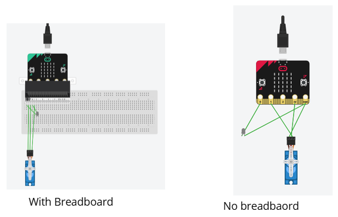

How does this product work?
The product uses a BBC microbit and microbit website to code. THe microbit can detect light and when a certain light level is approched the microbit sends a signal to a servo to turn. The servo acts as a light switch so when the servo is turned it turns on the LED. Down Below is a picture of what the Microbit looks like when set up with the servo and LED. I have a breadboard option as well, and There is also the Microbit code.
- The light can tuned so that it only activates during a certain light level, so the time when it activates can be modified
- Can be modified with sound to act as a possible go to sleep reminder for healthy sleeping
- Improves eye health when watching in the dark
- Completely automated requiring no effort to turn on or off
- Automates the effort of turning on your lights so whatever your doing can be kept being worked on